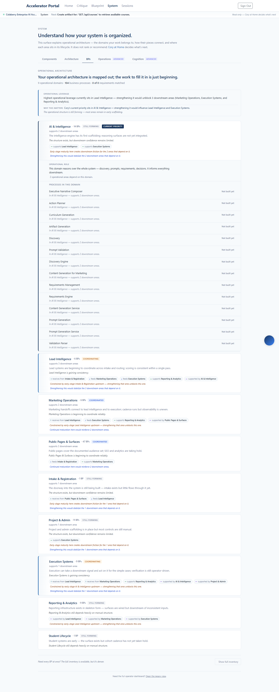
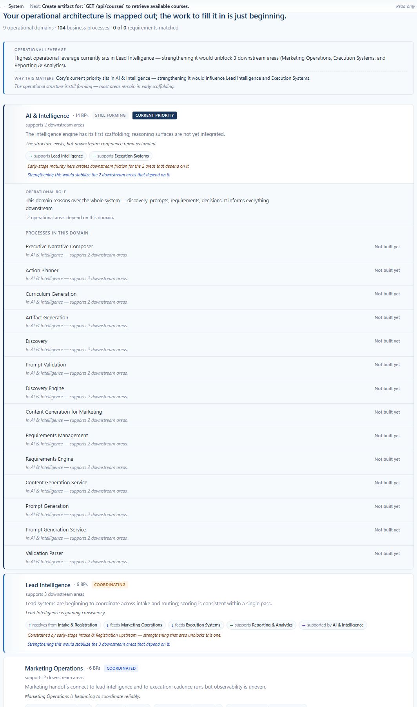
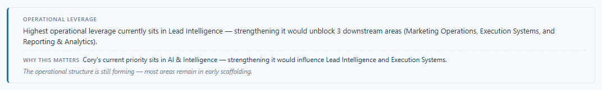
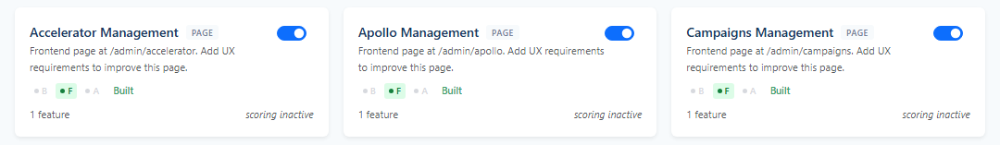
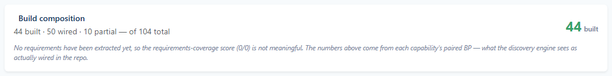

Shipped 2026-05-16 to enterprise.colaberry.ai (commits
d86c540). The prior session shipped the topology UX
correctly, then died at the visual-verification step because a single
screenshot at 2128px pushed the cumulative many-image context past
Claude Code's 2000px ceiling. This sprint hardens the verification
workflow so that can't happen again, surfaces the already-shipped
topology with bounded captures, and lands one Phase 4 calm one-liner
inheriting domain context into BP rows.
The prior session captured tmp/build-composition-card.png
at 2128 × 266 native (deviceScaleFactor 2). The next image read
tipped the cumulative many-image dimension over the per-conversation
ceiling, and every subsequent assistant turn returned the same
error and could not recover:
An image in the conversation exceeds the dimension limit for
many-image requests (2000px). Start a new session with fewer images.
The session had already shipped the topology UX correctly and was at the visual-verification step. The fix lives in the workflow, not the product.
tmp/recovered-session.md (1537 lines, 452 KB, 40 images stripped).92b223f + f92a9ee) were already on main and live. PROGRESS.md was missing the entry — written first, before any new work.d86c540.Hard rules now codified in CLAUDE.md under
Screenshot Verification Safety Protocol:
| Rule | Why |
|---|---|
Max safe width is 1800 px. Every PNG Claude will Read is ≤ 1800 px wide. | 2000 px is the per-conversation cumulative ceiling; 1800 leaves headroom for stacked images in a single turn. |
| Default viewport: 1440 × 900 at DSF 1. Retina DSF 2 only for review-doc embeds humans read in-browser. | DSF 2 doubles the native pixel width of every capture — silently the leading cause of overflow. |
All capture scripts must route through scripts/captureHelpers.js. Direct page.screenshot() calls in capture scripts are a violation. | One sanctioned path means one place to enforce the clamp, not nine. |
| Three-image read budget per conversation turn. | Even at 1800 px, four full-page images in one turn can still stress the context. The budget keeps verification focused. |
Every capture batch writes _summary.json. Each entry lists originalWidth, finalWidth, downscaled. Any finalWidth > 1800 is a process violation. | Audit artifact. Operator can confirm the clamp ran without reading every PNG. |
// scripts/captureHelpers.js — single sanctioned capture path
const MAX_SAFE_WIDTH = 1800;
const SAFE_VIEWPORT = { width: 1440, height: 900, deviceScaleFactor: 1 };
async function safeScreenshot(page, outPath, { fullPage, clip, label }) {
await page.screenshot({ path: outPath, fullPage, clip });
return maxWidthGuard(outPath, { label }); // downscales in place via sharp
}
async function safeCrop(page, selector, outPath, { padding, label }) {
const box = /* bounding rect */;
if (box.width > MAX_SAFE_WIDTH) box.width = MAX_SAFE_WIDTH;
return safeScreenshot(page, outPath, { clip: box, label });
}
scripts/captureHelpers.js — createSafeContext, safeScreenshot, safeCrop, boundedFullPage, maxWidthGuard, writeCaptureSummary.sharp@^0.33 added as devDependency for in-place PNG downscaling.captureProductionScreenshots.js, captureDrawerVariants.js, capturePresenceVariants.js, captureOperatorOrientation.js. The three retina ones dropped DSF 2 → DSF 1.The full System BPs surface, captured at safe viewport (1440 × 900, DSF 1) — the domain stack is ordered priority-first:

Focused crop of the priority row + its adjacent downstream row, showing the "Current priority" badge and the differentiated accent borders (primary on priority, primary-light on downstream):

sortByOperationalPriority() orders the stack: Cory's priority → operator focus → leverage score → canonical orderIndex.matchCoryPriorityDomain() + keyword fallback resolves Cory's next_action to a domain.BPDomainSurfaceRows.tsx; 3 px primary left-border on the priority row, 3 px primary-light on downstream rows.The leverage block now carries the "Why this matters" line that composes Cory's priority into a downstream-influence sentence — no graph chaos, one calm observation:

The eye reads three layers in this block, top to bottom:
Three capability cards on the Components tab, showing the build signal layer (B / F / A pillars, kind label, builtness tier) that the Honest-Build-Signal Sprint delivered:

And the build-composition summary header, which replaced the misleading "Project Completion 0%" when no requirements have been extracted:

frontend/src/utils/bpSignals.ts — bpPillars, bpKindLabel, bpBuiltness, domainBuildBreakdown, domainBuildSummary.domainBuildSummary in the header when no requirements exist.bpSignals.test.ts; all green in the 280-test suite at the time._summary.jsonThe full audit ledger for this capture batch, straight from
docs/screenshots/2026-05-16-priority-topology-recovery/_summary.json:
| Slug | Original width | Final width | Downscaled? |
|---|---|---|---|
| 01-system-bps-full | 1440 | 1440 | no |
| 02-priority-and-downstream-rows | 1064 | 1064 | no |
| 03-leverage-with-why-this-matters | 1072 | 1072 | no |
| 04-capability-cards-with-bp-signals | 1080 | 1080 | no |
| 05-build-composition-summary | 1064 | 1064 | no |
Every PNG comfortably under the 1800 px cap. No downscale needed
on any image because the safe viewport (DSF 1) and the clip-rect
clamps in safeCrop kept the capture pipeline honest
at the source — sharp's in-place downscale never had to fire on
this batch.
SAFE_VIEWPORT with DSF 1 keeps full-page captures naturally narrow.safeCrop clamps the bounding-rect width before page.screenshot() ever runs.maxWidthGuard reads the PNG metadata and downscales in place if anything slipped through.Two questions were surfaced before this sprint started, and answered explicitly:
| Question | Operator decision |
|---|---|
| Q1. "Active shaping aura / elevated lane" beyond the existing badge + 3 px border? | Current signal is sufficient — no shaping-aura, elevated-typography, or motion work. The badge + accent border is the active-shaping signal. |
| Q2. Per-BP downstream context for UNBUILT rows? | Inherit domain-level context — surface the domain's downstream count inside BP rows as a calm italic sub-sentence. No backend escalation. |
Q2 shipped as a single bounded change in BPDomainSurfaceRows.tsx:
each BP row now renders an italic sub-line below the main row
— "In Lead Intelligence — supports 3 downstream areas."
— when the domain has any downstream. Silent (renders nothing)
when downstream count is 0.
The sentence is produced by a pure helper, inheritedDomainContextSentence(domainLabel, downstreamCount)
in frontend/src/utils/bpInheritedContext.ts, with 4
unit tests in priorityTopology.test.ts covering:
singular/plural agreement, silence at 0, silence at negative,
and the anti-prescription vocabulary guardrail.
frontend/src/utils/bpInheritedContext.ts — pure helper, ~28 lines, returns null when nothing meaningful to say.BPLine in BPDomainSurfaceRows.tsx — now accepts domainLabel + domainDownstreamCount props and renders the italic sub-sentence beneath the main row.tsc --noEmit exit 0, CRA build exit 0, deployed to prod VPS in commit d86c540.The verification workflow is now operationally safe for long-running refinement sessions. The topology UX is verified live in production with bounded captures. One Phase 4 sentence inherits domain context into BP rows. Nothing else moved.